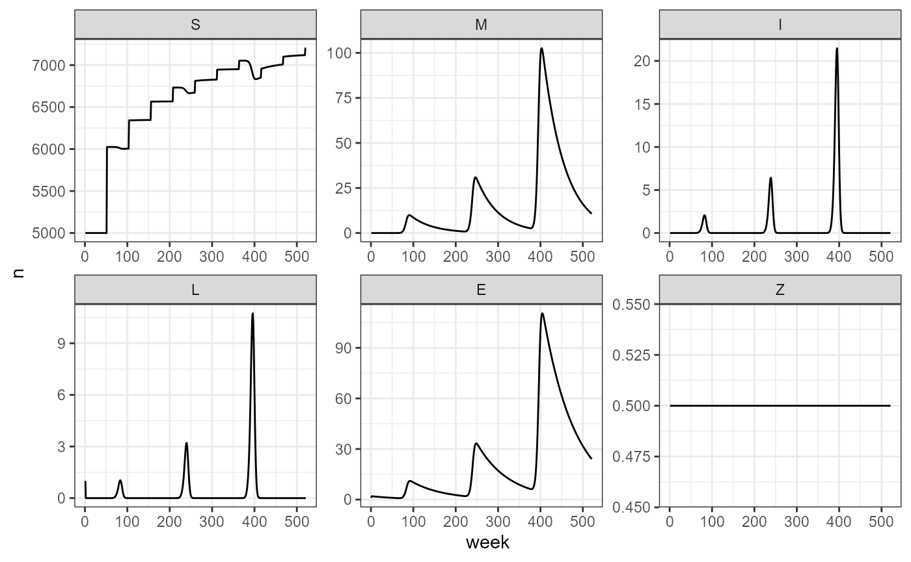
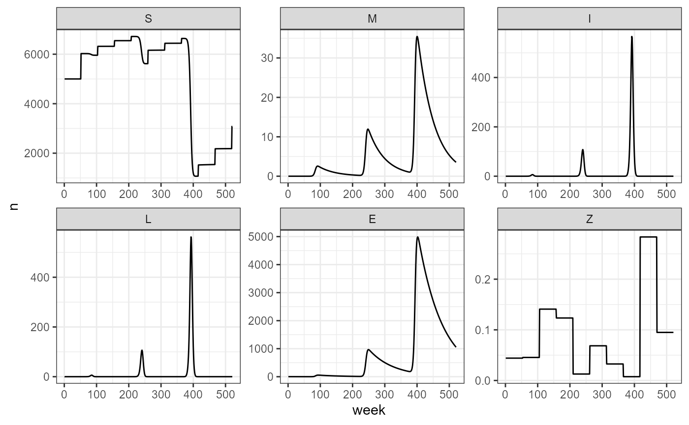

add_vax
add_vax.RmdWe incorporate vaccination into the model as a term that modifies the probability of survival, in other words, it modifies the fraction of the population that moves from the infected compartment to the immune compartment, instead of dying and becoming LIZ. The purpose of vaccination is to enable the host to fight off the infection, and by preventing death, we also reduce the number of infective particles becoming available in the environment. The parameters associated to vaccination describe the survival curve offered by herd immunity. The parameters \(\beta_0\) and \(\beta_1\) define a logistic curve for which different population-level vaccination rates translate to different survival probabilities. These parameters are associated to the host’s natural immunity to the pathogen, and the vaccine’s effectiveness.
As a simple exercise, we can consider a population over the course of 10 years, where the vaccination rate is held constant. In the case of a constant vaccination rate, we are essentially keeping survival probability constant over the course of the simulation.
First, we set our parameters:
# base parameters
my_years <- 10
my_tau <- 1
my_theta <- 100
# seasonal forcing parameters
my_b_fixed <- 0.001
my_b0 <- -30
my_b1 <- 0.85
my_outbreak_period <- 3*52
# vaccination parameters
my_zeta_no_vax <- 0.88 # survival no vaccination
my_fixed_vax <- rep(0.5, my_years) # fixed vaccination
my_yearly_vax <- runif(my_years, min = 0, max = 0.5) # random vaccination rates by year
my_beta0 <- -5
my_beta1 <- 10
smile_main(b0 = my_b0, b1 = my_b1, period = my_outbreak_period,
theta = my_theta, tau = my_tau, years = my_years,
vax = my_fixed_vax, beta_0 = my_beta0, beta_1 = my_beta1, output_df = TRUE) -> fixed_vax_sim
head(fixed_vax_sim)
#> week S M I L E Z
#> 1 1 5000 0 0 1 1.000000 0.5
#> 2 2 5000 0 0 0 1.986800 0.5
#> 3 3 5000 0 0 0 1.960574 0.5
#> 4 4 5000 0 0 0 1.934695 0.5
#> 5 5 5000 0 0 0 1.909157 0.5
#> 6 6 5000 0 0 0 1.883956 0.5We create a simple function to help us visualize the data we just generated
build_SMILE_plots <- function(smile_output_as_df, facet_rows = 2) {
smile_output_as_df %>%
pivot_longer(-week, names_to = "compartment", values_to = "n") %>%
mutate(compartment = factor(compartment, levels = c("S", "M", "I", "L", "E", "Z"))) %>%
ggplot(aes(x = week, y = n)) +
facet_wrap(~compartment, scales = "free", nrow = facet_rows) +
geom_path() +
theme_bw()
}
fixed_vax_sim |> build_SMILE_plots()
We can compare this to variable vaccination rates:
smile_main(b0 = my_b0, b1 = my_b1, period = my_outbreak_period,
theta = my_theta, tau = my_tau, years = my_years,
vax = my_yearly_vax, beta_0 = my_beta0, beta_1 = my_beta1, output_df = TRUE) -> var_vax_sim
head(var_vax_sim)
#> week S M I L E Z
#> 1 1 5000 0 0 1 1.000000 0.02496662
#> 2 2 5000 0 0 0 1.986800 0.02496662
#> 3 3 5000 0 0 0 1.960574 0.02496662
#> 4 4 5000 0 0 0 1.934695 0.02496662
#> 5 5 5000 0 0 0 1.909157 0.02496662
#> 6 6 5000 0 0 0 1.883956 0.02496662
var_vax_sim |> build_SMILE_plots()
From this simulation we observe that with drops in vaccination, we have a direct increase in the number of deaths and spores in the environment.